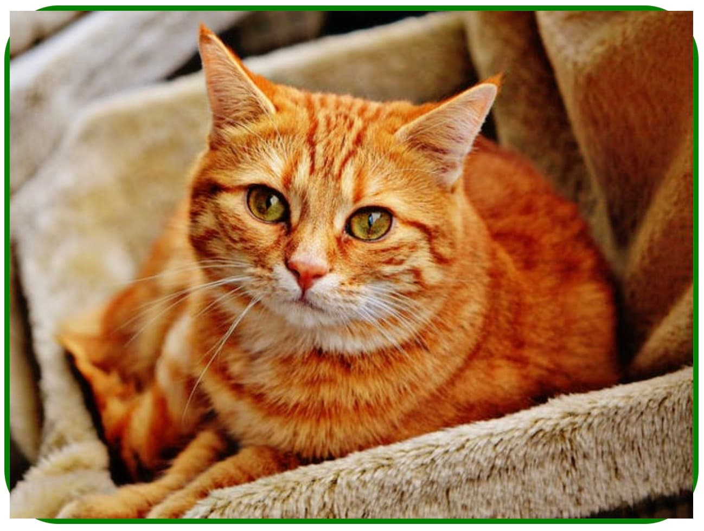

Розміри елемента визначаються контентом всередині нього або задаються явно. Що відбувається у разі зміни контенту всередині елемента? Наприклад, якщо не встановити висоту, то вона буде збільшуватися, доки в елементі не поміститься увесь контент.
Але що буде, якщо висота або ширина вказані явно? Тоді блок не може збільшитися, і вміст його переповнює - виходить за межі. Властивість overflow управляє тим, як поводиться вміст елемента, якщо його розмір перевищує допустиму довжину або ширину.
overflow: visible | hidden | scroll | auto
Корисно:
Також існують властивості overflow-x і overflow-y, які управляють
переповненням тільки у відповідній площині.
Розглянемо поведінку елемента з фіксованими розмірами для кожного значення overflow.
Якщо не вказати властивість overflow, то за замовчуванням встановлюється значення visible і, у разі переповнення, вміст буде відображатися за межами блоку. У прикладі межа блоку позначена червоною рамкою.
See the Pen lesson-09-overflow-visible by goit-academy (@goit-academy) on CodePen.
Увага:
Тут важливо пам'ятати, що навіть, якщо зовні елемента є видимий контент,
що його переповнює, цей контент не впливає на геометрію сусідніх
елементів як з кнопкою в прикладі.
Протилежне значення hidden. У цьому випадку будь-який переповнюючий вміст, який виходить за межі елемента, не відображається. Така поведінка зручна для використання з декоративними ефектами, приклади яких ми розглянемо далі.
See the Pen lesson-09-overflow-hidden by goit-academy (@goit-academy) on CodePen.
Увага:
Пам'ятайте, що у цьому випадку переповнюючий контент недоступний і
прихований від користувача. Саме тому ми ніколи не задаємо фіксовану
висоту текстовим блокам.
Якщо встановлене значення scroll, переповнюючий вміст буде прихований, але з'являться скроллбари, щоб була можливість переглянути увесь контент. Водночас будуть показані обидва скроллбари - горизонтальний і вертикальний, навіть якщо потрібен тільки якийсь один.
See the Pen lesson-09-overflow-scroll by goit-academy (@goit-academy) on CodePen.
Значення auto схоже на значення scroll, за винятком того, що показуються тільки ті смуги прокручування, які дійсно необхідні.
See the Pen lesson-09-overflow-auto by goit-academy (@goit-academy) on CodePen.
Зображення поводяться таким чином, що візуально виходять за межі блоку, якщо їх розмір більший. Ця особливість спливає у прийомі заокруглення рамок зображення. Зображення обгортається в «тумбу», якій задаються стилі рамки та її радіуса.
<div class="thumb">
<img src="" alt="" />
</div>
Оскільки зображення завжди переповнює блок, візуально виходячи за його межі, виходить не зовсім те, що потрібно.
На допомогу приходить властивість overflow та її значення hidden, яке задається «тумбі» і контролює видимість переповнюючого контенту. Колір і розмір рамки у прикладі заданий для візуалізації, встановлювати будь-які значення, крім радіуса, - не обов'язково.
See the Pen lesson-09-rounded-image by goit-academy (@goit-academy) on CodePen.
Властивість overflow зі значенням hidden використовується під час створення декоративних ефектів з появою прихованого контенту через межі блоку.
See the Pen lesson-09-hidden-overlay by goit-academy (@goit-academy) on CodePen.
Такий ефект реалізується за допомогою кількох простих кроків. Розберемо стилі для створення ефекту, повний код дивіться на живому прикладі.
<div class="box">
<div class="overlay"></div>
</div>
Спочатку абсолютно позиціонуємо div.overlay щодо div.box і розтягуємо його на всю ширину і висоту div.box.
.box {
position: relative;
}
.overlay {
position: absolute;
top: 0;
left: 0;
width: 100%;
height: 100%;
}
Використовуючи властивість transform і translateX, зміщуємо div.overlay вліво на 100% його ширини. Трансформації будемо детально розглядати далі.
.overlay {
position: absolute;
top: 0;
left: 0;
width: 100%;
height: 100%;
transform: translateX(-100%);
}
При ховері по div.box, використовуючи transform і translateX, повертаємо div.overlay у початкове положення.
.box:hover .overlay {
transform: translateX(0);
}
Задаємо div.box властивість overflow зі значенням hidden, щоб візуально приховати div.overlay, коли той зміщений за межі div.box.
.box {
position: relative;
overflow: hidden;
}
Анімацію будемо детально розглядати у наступних уроках, зараз просто використовуємо одну властивість для візуалізації появи оверлею. Додаємо div.overlay перехід для анімації властивості transform.
.overlay {
position: absolute;
top: 0;
left: 0;
width: 100%;
height: 100%;
transform: translateX(-100%);
transition: transform 250ms ease;
}